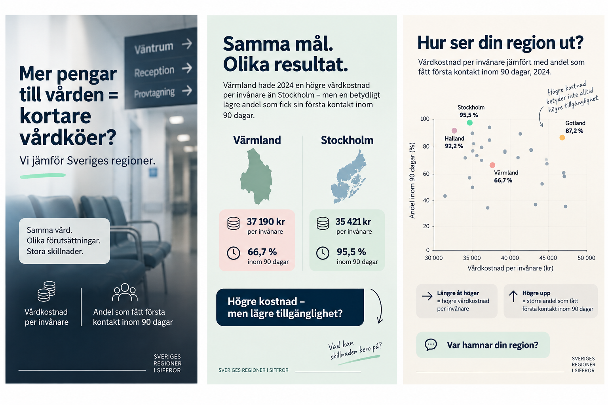

Content Assignment
Collected data, analysis and a proposed content plan.
Starting point
I explore regional differences in Swedish healthcare, focusing on data from 2024. I compare net healthcare costs per resident with the share of patients who had their first contact with specialist care within 90 days.
The aim is to make the statistics accessible and encourage interest in regional differences in Swedish healthcare.
The content explores this question: How do regional healthcare costs relate to access to care?
The comparison can show associations, but does not explain what causes the differences. Higher or lower costs do not in themselves mean better or worse access to care.
Content strategy
Instagram: the main channel
The series uses data graphics, charts and regional comparisons with short, accessible messages. Instagram is the main channel for presenting the data visually and inviting engagement through questions such as “How does your region compare?”.
“More healthcare spending = shorter waiting times?” introduces the series as an open question, not a claim about cause and effect.
LinkedIn: awareness and context
The LinkedIn post presents the study in a broader context for a professional audience. A short summary generates interest and directs readers to the visual series on Instagram, where they can explore the comparisons and discuss the data.
The portfolio: presenting the assignment
The work, content plan and content examples are presented here for the course tutor. The portfolio is not a publishing channel in the content plan.
Content plan
The plan shows how the content could be published over a working week. Instagram is the main channel for the visual series, while LinkedIn presents the study in a broader context and directs interested readers to Instagram. Around 2–3 of the five planned posts are developed as visual prototypes for the assignment.
| Day | Platform | Content | Format | Purpose |
|---|---|---|---|---|
| Monday | More healthcare spending = shorter waiting times? | Teaser/data graphic | Spark curiosity and introduce the question. | |
| Tuesday | Stockholm vs Värmland | Data graphic | Show a clear regional contrast. | |
| Wednesday | How does your region compare? | Scatterplot/data visualisation of the regions | Show the overall picture and let readers find their own region. | |
| Thursday | Gotland vs Halland | Data graphic | Show another regional comparison. | |
| Friday | An overview of the study | Short data-led LinkedIn post + link to Instagram | Reach a professional audience, generate interest in the study and direct readers to the content series on Instagram. |
Content examples
Three visual prototypes for Instagram: an introduction to the main question, a comparison of Värmland and Stockholm, and an overview of the regions.

Data & source
The dataset contains regional data from Kolada for 2021–2024. The analysis compares total net healthcare costs (including pharmaceuticals), in SEK per resident, with the share (%) of patients whose first contact with specialist care took place within 90 days.
The content examples focus mainly on 2024 to make the regional comparisons clear. The underlying dataset covers all four years: 2021, 2022, 2023 and 2024.
Data source: Kolada
Period: 2021–2024
Focus of the content examples: 2024